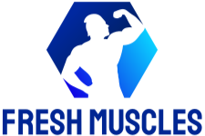

Nyitva Tartás: Hétfő 2-4 Péntek 2-4
1: Gyakorlat:Guggolás 2: Gyakorlat Lehúzás 3: Gyakorlat Evezés gépen ülve 4: Gyakorlat Fekvőtámasz 5: Kitörés 6: Vállból nyomás 7: Felhúzás 8: Tolódzkodás
A bemelegítés talán a legelhanyagoltabb része az edzéseinknek. Általában kis helyben futással, ugrálással, csípőkörzéssel le is tudjuk. Óriási hiba azt hinni, hogy ez elég! A hetékony edzésmunkához az izmainkat, ízületeinket és keringésünket megfelelő állapotba kell hozni. Edzéscéltól függetlenül tehát legalább 15 percet fordítsatok bemelegítésre, higgyétek el, ez nem elpocsékolt idő! Képesebb leszel magasabb teljesítményt elérni, csökkented az izomláz előfordulási valószínűségét és sok sérülést meg is előzhetsz.
A guggolás szerintem minden programnak ajánlott gyakorlata. Sokkal nehezebb helyesen végrehajtani, mint azt sokan hiszik; a helyes technikai kivitelezésről is számos elmélet létezik. Segít a mindennapi teendőink könnyebb elvégzésében az által, hogy az alsótestet erősíti, mozgékonyabbak leszünk, így a napi feladataink elvégzése kevesebb fáradtságot okoz majd.
A lehúzás bicepszre a bicepszet és a széles hátizmok alsó részét dolgoztatja meg leginkább. Kiinduló helyzet Fogd meg a rudat szűk, maximum vállszélességű fogással, a tenyerek az arcod felé nézzenek. Koncentrálj arra, hogy a bicepsz erejével húzd le a rudat a mellkasodig, majd lassan engedd vissza.
Az evezés gépen ülve a hátizom középső régióit dolgoztatja meg, de a karod tartásának variálásával a külső része is stimulálható.
Ülj be az evezőgépbe, támaszd meg a mellkasodat a támlán. Ragadd meg a karokat picivel a vállmagasságnál lejjebb.
A fekvőtámaszban az a nagyszerű, hogy a szervezetednek nehéz lesz hozzászoknia, mivel sok különböző fajtája létezik, amelyek az egyes izmokat mindig kicsit másképp dolgoztatják meg. Ennek okán a fekvőtámasz hatása, minden pozícióban másként jelentkezik. A fekvőtámasz egy testhelyzet, melyet jellemzően karhajlítás-nyújtással kombinálva testgyakorlatként az izmok erősítésére használnak. A gyakorlat erősíti a mell-, kar-, has-, hát-, fenék- és lábizmokat.
Ez a mozgás a combhajlítókat, a farizmokat és a négyfejű combizmot fejleszti. Miközben erőteljes izom-összehúzódás éri a combizmokat, ugyanakkor erőteljes nyújtó hatása is van a gyakorlatnak, ami ezáltal kiemelten hatékonnyá és komplexszé teszi. A kitörés helyesen végezve rendkívül intenzív, folyamatos terhelést biztosít, így mindenképpen érdemes beilleszteni a lábedzésedbe.
A gyakorlat elsősorban az első és az oldalsó deltaizmokat fejleszti.
Ülő helyzetben tarts két kézisúlyzót a vállaid magasságánál kicsit fentebb. Egyenes háttal, emelt fejjel ülj.
Nyomd ki mind a két súlyzót egyszerre a fejed fölé. A gyakorlat végzése közben ne dőlj hátra. Engedd vissza a súlyokat, és folytasd a gyakorlatot egyenletes ütemben.
A gyakorlat a hát alsó és középső részének izomzatát, a csípő izmait, a combizmokat és csuklyás izmot is stimulálja. A fogást is erősíti.A felhúzást kevesen csinálják, mert rosszul végezve igen sérülésveszélyes is lehet, ám jól kivitelezve az egyik leghatásosabb tömegnövelő alapgyakorlat.
A tolódzkodás egy remek mellizom-gyakorlat, különösen, ha a rudak viszonylag távol (70-85 cm) vannak egymástól. Az egymáshoz túl közel lévő rudak nagyobb mértékben mozgatják a tricepszet, bár azért a mellizom alsó és külső részét is megterhelik. Tehát a tolódzkodás a mellre akkor fog leginkább hatni, ha relatíve széles fogást alkalmazol.